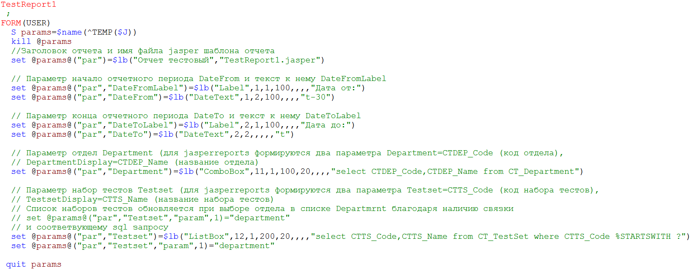
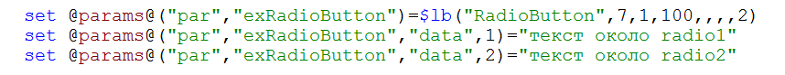
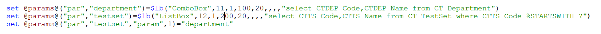
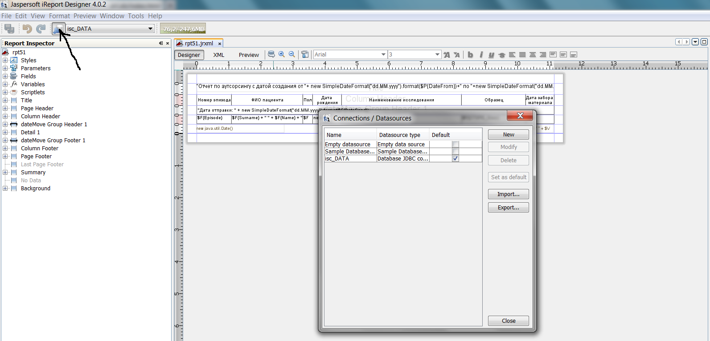

| Руководство для пользователя |
| Настройки сервера Cache для работы с Jasperreports |
| Описание внутренней структуры |
Процесс создания отчета состоит из трех шагов: двух вспомогательных - описание экрана для запроса параметров отчета, вставка отчета в меню ЛИС -
и основной шаг - создание шаблона отчета в iReport.
Создаем новую программу (int) в Cache Studio с любым именем nameRoutine.int. Пример такой программы: 
Структура глобали для описания параметров: ^имя глобали($job,"имя параметра (english)")=строка описания параметра (например, ^temp($job,"param1")=$listbuild("Label",1,1,,,,,"Текст")
Структура строки для описания параметра (структура $list)Обязательные данные : ^имя глобали($job)=$listbuild("Заголовок окна запроса параметров","имя шаблона jasper(например, rpt51.jasper)")
Данные для параметров типа ComboBox, ListBox, Table возможно заполнять не только через sql запрос, но и напрямую в узлах ^temp($job,"param1","data",node)=value, где
где node - код, value - значение. Для типа параметра RadioButton это единственный способ определения данных.
Пример:

Для параметров типа ComboBox, ListBox, Table, у которых задан sql запрос, возможно связать их содержимое со значением, выбранным в другом параметре.
Для этогов узлах ^temp($job,"param1","param",порядковый номер параметра для sql запроса (порядковый номер ?))=имя связанного параметра
Например, для связывания списка исследований (параметр testset) cо списком отделов (department) 
В ЛИС Классификатор->Система->Отчет-Настройка отчетов в поле в левом нижнем углу ввести id отчета и нажать Tab, к уже имеющейся информации добавить:
в поле DLL name - PRTCLNRUS.clsStart, в поле Группа отчетов - указать подменю, в котором будет вызываться данный отчет.
Для сохранения надо нажать кнопку Обновить
В шаблоне отчета надо обязательно объявить параметры шаблона с именами параметров отчета, (например,DateFrom,DateTo,ExLab), в них при формировании отчета загрузятся выбранные пользователем значения параметров отчета.
Для типов параметров ListBox,ComboBox,Table надо дополнительно объявить параметры ИмяПараметраDisplay (например, ExLabDisplay)
Подробнее про ListBox, ComboBox и Tableздесь
Для установки связи с БД Cache необходимо в iReport создать новый источник данных (см. рисунок)
 Параметры:Для проверки связи можно нажать кнопочку Test
В dll делается вызов программы Cache для получения URL $$getReportURL^TCLEx.VBReport() (имя программы для обработки отчета берется из ^TMP("REPORTSPB",$j)) и с помощью ShellExecute запускается браузер
ErrorLevel = ShellExecute(vbNull, "open", reportURL, vbNull, vbNull, 1)
В качестве URL $$getReportURL^TCLEx.VBReport() возвращает строку вызова класса ReportZEN.genRpt.cls с двумя параметрами user=,reportRoutine= (например, http://lissrv:57772/csp/bion/ReportZEN.genRpt.cls?user=demo&reportRoutine=PRTCLNRUS51)
Класс ReportZEN.genRpt.cls генерит окно для ввода параметров отчета по описанию, данному в программе reportRoutine
При нажатии кнопочки Печать запускается программа запуска генерации отчета Jasperreports, в которую передается название шаблона отчета, массив параметров для отчета и имя и путь к сгенерированному файлу отчета
После создания файла отчета с помощью класса ReportZEN.downloadFile.cls поток с содержимым файла отчета передается на компьютер клиента и открывается в браузере
| Номер в $piece/$list | Суть | |
| Для всех типов | ||
| 1 | Тип параметра | |
| 2 | Номер колонки, в которой будет расположен параметр | |
| 3 | Номер строки, в которой будет расположен параметр | |
| 4 | Ширина поля (неизвестно в чем) | |
| 5 | Зарезервировано | |
| 6 | colspan | |
| 7 | rowspan - предположительно | |
| Label | ||
| 8 | Текст Label | |
| DateText | ||
| 8 | Начальное значение (t-текущая дата, t+n - n дней плюс к текущей дате, t-n - n дней минус от текущей даты) | |
| CheckBox | ||
| 8 | Начальное значение (1-включен, 0-выключен) | |
| 9 | Текст около | |
| ListBox | ||
| 8 | Зарезервировано | |
| 9 | sql запрос | |
| 10 | sql запрос для выбора одной записи по ее коду - нужно для того, чтобы работал поиск (подробнее) | |
| ComboBox | ||
| 8 | Зарезервировано | |
| 9 | sql запрос | |
| 10 | sql запрос для выбора одной записи по ее коду - нужно для того, чтобы работал поиск (подробнее) | |
| 11 | valueColumn - столбец, который попадает в jasperreport как значение этого параметра (по умолчанию = "1") (работает только, если задан sql запрос) | |
| 12 | displayColumns - строка, в которой через запятую перечислены столбцы, которые должны быть показаны в окне (по умолчанию = "2") (работает только, если задан sql запрос) | |
| Table | ||
| 8 | Зарезервировано | |
| 9 | sql запрос | |
| 10 | ||
| 11 | ||
| 12 | ||
Рассмотрим параметр с именем ExLab типа ComboBox (sql: select CTRL_Code,CTRL_Description from SQLUser.CT_ReferralLaboratory)
Первое поле в sql запросе - это ключ (valueColumn) для массива строк (передается в jasperreports как параметр ExLab)
Второе поле - то, что выводится на экран (displayColumns) (передается в jasperreports как параметр ExLabDisplay)
То есть в шаблоне для отчета надо описать параметры ExLab, ExLabDisplay и пользоваться ими в sql Запросе к базе данных (ExLab) и при выводе на экран (ExLabDisplay)
Для того чтобы работал поиск необходимо написать два sql запроса на 7 и 8 месте в строке описания параметра (через ":")
Пример: sql (7 место) select CTRL_Code,CTRL_Description from SQLUser.CT_ReferralLaboratory where CTRL_Description %STARTSWITH ? ORDER BY CTRL_Description
sql (8 место) select CTRL_Description from SQLUser.CT_ReferralLaboratory where CTRL_Code = ?